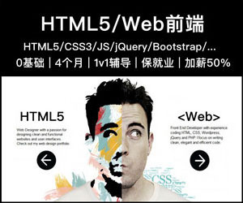

最新笔记
值得收藏
推荐笔记
工具库


- 代码辅助
- 正则调试
- JS&CSS压缩
- JSON格式化
- 对照表
- HTTP状态码
- HTML5/CSS3支持情况
- 字体图标
- Icomoon
- FontAwesome
- 阿里矢量
- API手册
- HTML5
- CSS3
- JavaScript
- jQuery
- 静态CDN
- 百度静态
- BootCDN
- 又拍云CDN
更多软件工具

等你参与
精品课程 我也要出现在这里
- 【推广】前端入门课程，3天快速入门
- 【课程】xHTML+CSS页面布局视频全集
- 【实战】JavaScript特效实战，脚本高手的炼成！
- 【简历】教你写一份成功率99%的“专业简历”